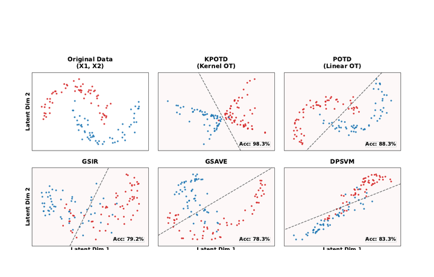

Welcome to my homepage! I am Peize Wang at the Institute of Statistics and Big Data,
Renmin University of China.
My research interests focus on optimal transport and sufficient dimension reduction,
with a particular interest in kernel methods for nonlinear representation learning.
Industry Impact
Huawei
At Huawei, I worked on statistical tools for data-quality diagnosis and
model-free predictability assessment in industrial tabular-data tasks.
Model-Free Error and Accuracy Bounds
Promoted the landing of Fano-inversion based tools for estimating
error bounds and accuracy ceilings, helping teams distinguish data
information limits from model-selection bottlenecks before expensive
model tuning.
Data-Driven Feature Screening
Built model-free feature-selection workflows based on multivariate
mutual information, POTD, and Conditional Wasserstein Dependency
Measure (CWDM), targeting high-dimensional, noisy, and redundant
industrial data under memory constraints.
Industrial Diagnostics
Supported early validation on arc-fault, NVH, and liquid-leakage
fault diagnosis scenarios, turning statistical upper-bound estimation
and feature-ranking methods into reusable evaluation pipelines.
Recent News
Updates
Zijin Summit at Huawei Huang Danian Chasiwu
I participated in the Zijin Summit young scholars'
paper sharing session at Huawei Huang Danian Chasiwu.
Two Papers Accepted by STAI-X
Our papers KPOTD: Kernel Principal Optimal Transport Directions for
Nonlinear Sufficient Dimension Reduction and SSP-Ensemble: A
Sufficient Subspace Projection Ensemble for Multiclass Classification
were accepted by the inaugural STAI-X conference.
Selected Papers
STAI-X 2026
STAI-X

KPOTD: Kernel Principal Optimal Transport Directions for Nonlinear
Sufficient Dimension Reduction
Peize Wang, Wenhao Jiang, Cheng Meng*
STAI-X, 2026
Kernelizes optimal-transport displacement covariance in an RKHS to recover
nonlinear sufficient dimension reduction structures.